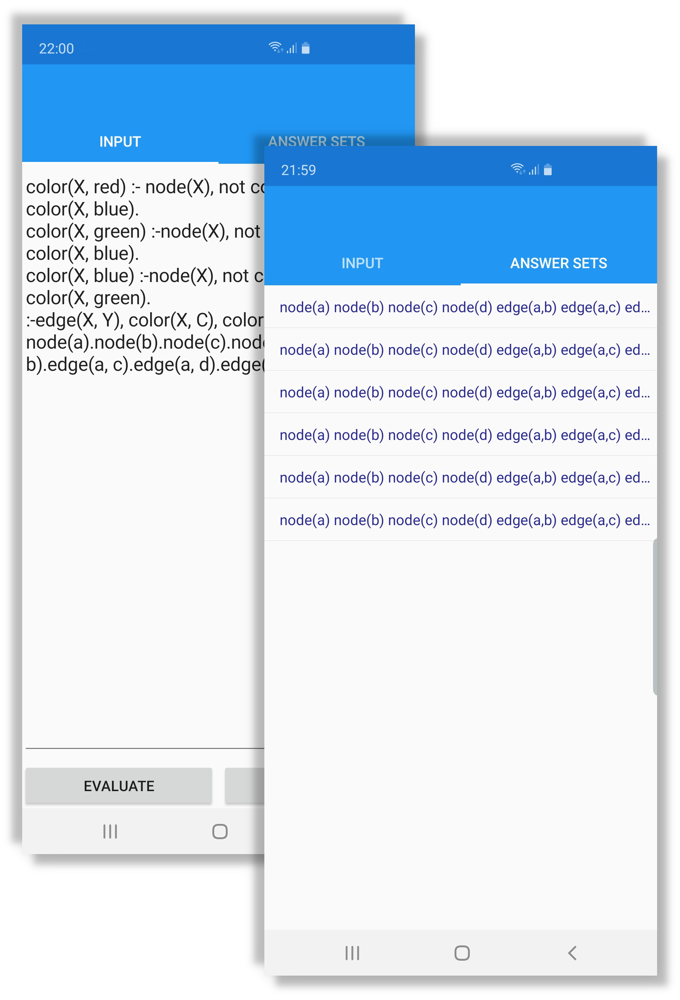
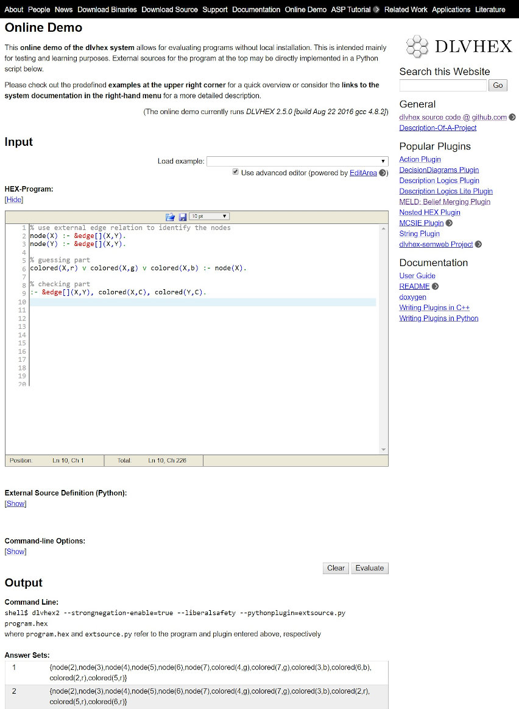
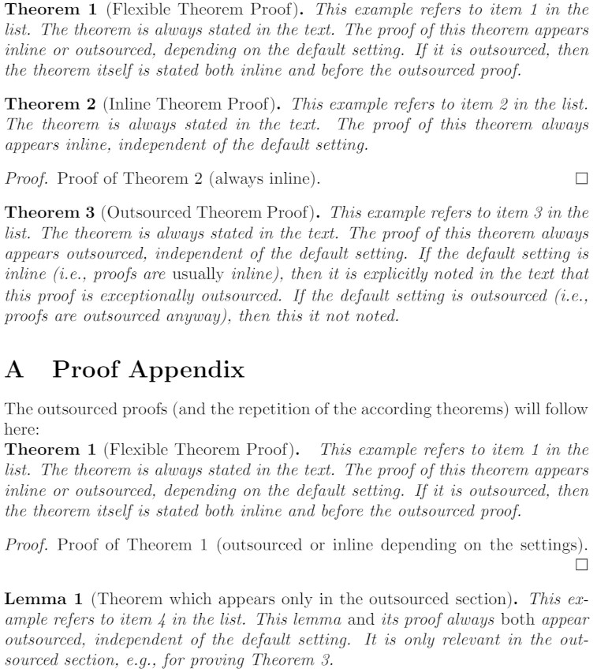
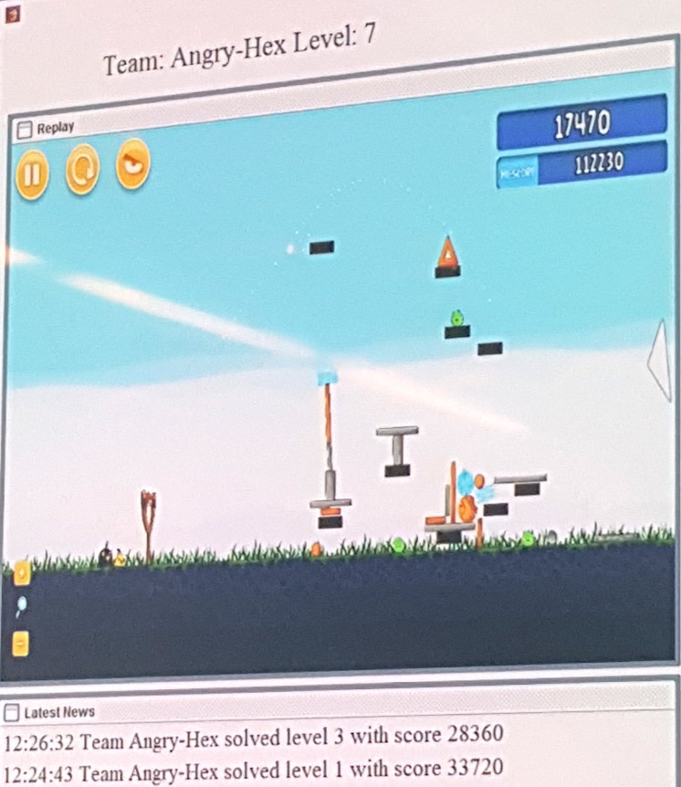
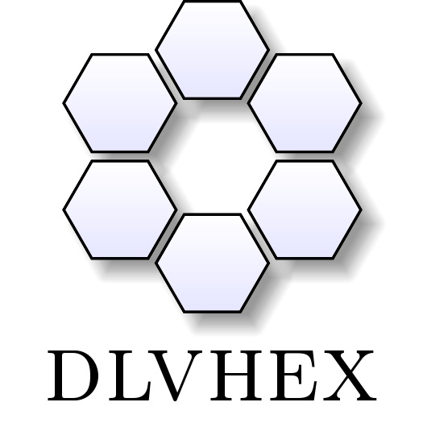
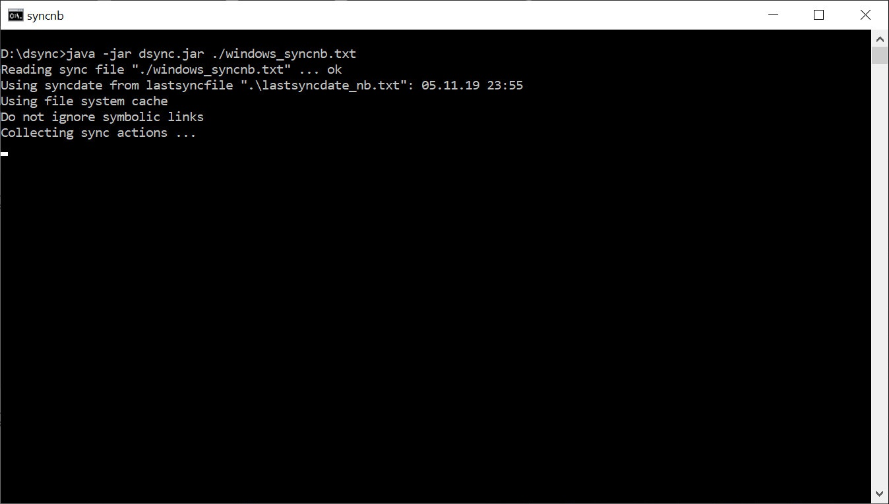
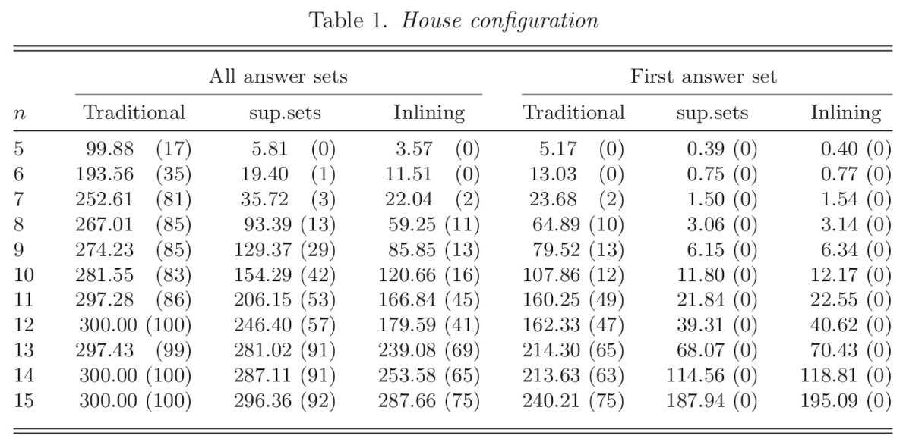
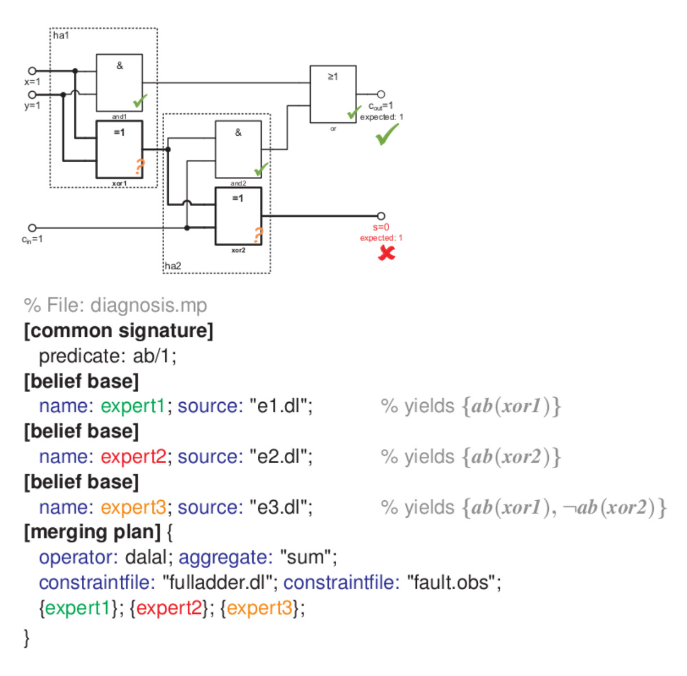
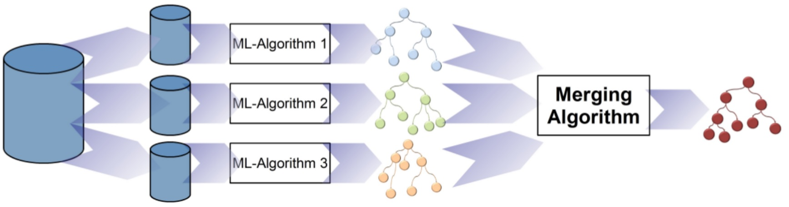

Clingo App |
 |
A port of the clingo reasoner to Android- and iOS-based systems (experimental project).
Technologies: C#, JavaScript, Xamarin, Emscripten
Portierung des clingo-Reasoners auf die Android- und iOS-Plattform (experimentell).
Technologien: C#, JavaScript, Xamarin, Emscripten |
dlvhex Online Demo |
 |
Allows for using the dlvhex reasoner software via an AJAX-based Web interfaces.
Technologies: AJAX, virtualized server
Erlaubt die Nutzung des dlvhex-Reasoners über ein Webinterface.
Technologien: AJAX, virtualized server |
mytheorem |
 |
A LaTeX package for flexible positioning of proofs either inline or in the appendix.
Technologies: LaTeX
Ein LaTeX-Paket f&uumo;r flexible Positionierung von Beweisen.
Technologien: LaTeX |
Angry-HEX |
 |
An AI agent for the Angry Birds computer game developed for participation in the AIBirds competition. It is based on declarative problem solving with logic programs.
Technologies: Java, C++
Ein KI-Agent f&uumo;r das Computerspiel, entwickelt für die Teilnahme bei der AIBirds Competition. Der Agent basiert auf deklarativem Probleml&oumo;sen mit Logikprogrammierung.
Technologien: Java, C++ |
dlvhex |
 |
A logic-programming reasoner for evaluating HEX-progams, which are an extension of answer set programs.
Technologies: C, C++, Python, Boost libraries, GNU tools
Ein Reasoner für Logikprogrammierung basierend auf HEX-Programmen als Erweiterung von Answer Set Programming.
Technologien: C, C++, Python, Boost libraries, GNU tools |
dsync |
 |
A utility for two-way synchronization of distributed directories.
Technologies: Java
Ein Tool fur die bidirektionale Synchronisation von verteilten Verzeichnissen.
Technologien: Java |
ABC Benchmarking System |
 | |
MELD |
 |
System for merging of declarative knowledge bases.
Technologies: C++, Lex, Yacc, Boost Spirit
System zum Zusammenführen von deklarativen Wissensbasen.
Technologien: C++, Lex, Yacc, Boost Spirit |
Decision Diagram Plugin for dlvhex |
 |
Allows for easy processing of decision diagrams in logic programs.
Technologies: C++
System zur Verarbeitung von Entscheidungsdiagrammen in Logikprogrammen.
Technologien: C++ |
Software
To see my activities in software development visit my github page. I was involved in the following list of software projects, some of which have their own websites:
Software
Für Informationen zu meiner Mitwirkung an Softwareprojekten verweise ich auf meine github-Seite. Es folgt eine Übersicht:
×